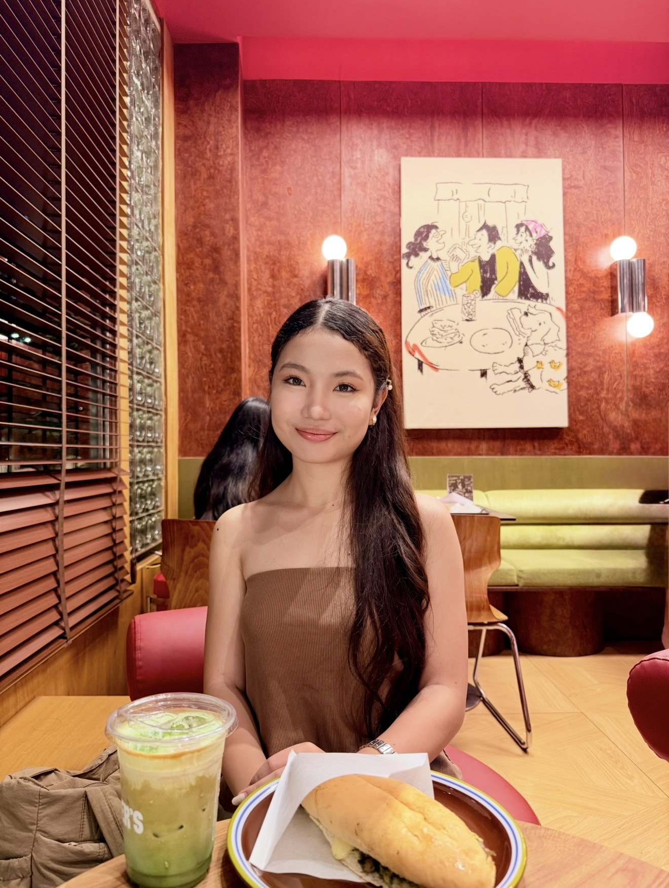

Ramen Go Timelapse
A timelapse video showcasing my creative process in creating a ramen-inspired artwork, capturing different stages of its development from start to finish.
August 2025
Viva La Vida!

Hi! I'm Reigen, but you can call me Rei or Regan. I'm a second-year BAMS student and a Technical Support Representative with a passion for multimedia arts.
What began as a childhood hobby has grown into a meaningful way for me to express myself. Through drawing, painting, photography, and journaling, I explore different ways to capture experiences and communicate ideas.
I believe that life is full of changes worth embracing and stories worth telling. Through my creative work, I hope to find meaning in the everyday and turn ordinary moments into something worth remembering.
You can reach me via email:
Email: rncelso2@up.edu.ph
Facebook: My Facebook Profile
Instagram: My Instagram Profile
A timelapse video showcasing my creative process in creating a ramen-inspired artwork, capturing different stages of its development from start to finish.
August 2025
A Figma-based user interface redesign of Aritel Clothing Website providing better user experience and website interface.
September 2026
View ProjectA Google Sites project showcasing three man-made multimedia objects and descriptions of how they resonate with my passions and personal interests.
August 2026
View Project